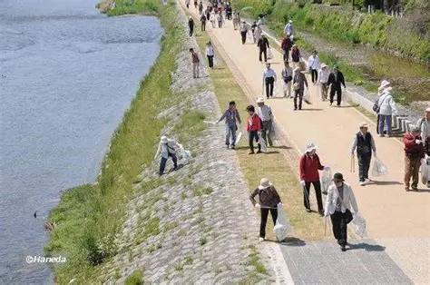
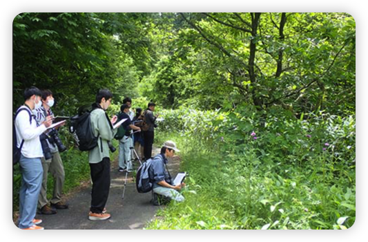
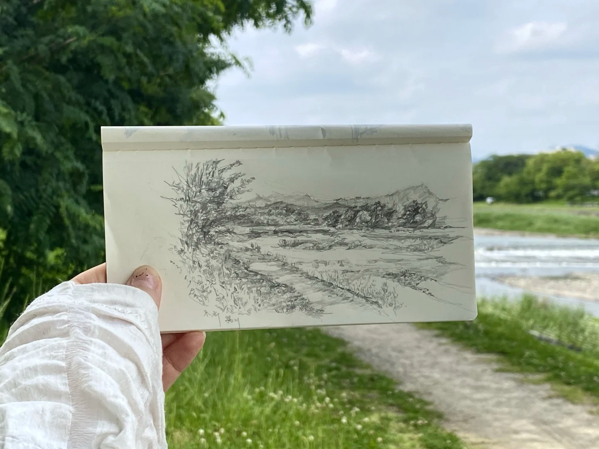

鴨川の保護活動
鴨川の豊かな自然を守るため、多くの人々や団体が様々な活動を行っています。
現在進行中のプロジェクト
河川清掃活動
定期的にボランティアによる河川敷の清掃活動が行われ、ゴミの除去や外来植物の駆除を行っています。
生態系調査と研究
鴨川に生息する魚類や鳥類、水生昆虫などの調査を行い、生態系の変化を記録し、保護策に役立てています。
「いきもの図鑑」作成プロジェクト
鴨川近隣住民と共に鴨川に生息する生物の図鑑を作成し、紙媒体またはウェブ上で公開する。
将来予定の鴨川イベント
2026年より、鴨川の自然といきものをテーマにしたさまざまな参加型イベントを開催予定です。
-
🌿 エコ標語・メッセージ募集
開始時期：2026年2月予定
「自然を守ろう」「いきものと共に」など、環境保全に関する短い言葉を募集します。選ばれたメッセージは、ウェブサイトや展示で紹介されます。 -
📸 鴨川フォトコンテスト
開催時期：2026年春
鴨川の自然や生きものをテーマにした写真コンテスト。鴨川の魅力を写真で伝えましょう。 -
🎨 ネイチャースケッチ大会
開催時期：2026年初夏
川辺に座って動植物をスケッチ。自然を観察し、描くことで、その豊かさに気づくことができます。 -
🍁 自然素材クラフト
開催時期：2026年秋
落ち葉や木の実など自然の素材を使って、オリジナルの作品を作るワークショップ。楽しく自然とふれあいましょう。
現在、これらのイベントの準備を進めております。最新情報は随時こちらでお知らせいたしますので、ぜひご期待ください！
あなたにできること
協力団体・機関
（ここに協力している団体や行政機関のロゴなどを表示）